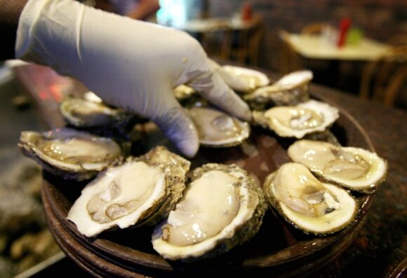

Welcome to austrės
Gera virtuvė: Austrės
2020.10.29 10:04Gera virtuvė
2012 m. gruodžio 8 d., šeštadienis
Austrės
Žaidimas "11" privertė greičiau parašyti apie austres nei planavau. Nuotraukoje kurią uždaviau, kaip papildomą klausimą, yra austrių auginimo "ūkiai".
Etang de Thau (sūraus vandens lagūna susisiekianti su Viduržiemio jūra)
Visada kažkaip skeptiškai žiūriu į visus ūkius, kuriuose kažkas veisiama. Man daugiau prie širdies kaimo kieme išaugintos vištos ir triušiai. Ežere, upėje ar jūroje pagauta žuvis.
Bet kai pamačiau Bouzigues miestelyje esančius austrių "ūkius" pakeičiau nuomonę. Čia austrės auginamos natūraliuose vandenyse, o ne kažkokiuose baseinuose ar tvenkiniuose. Dar kas nustebino ir pakeitė nuomonę apie austres, tai darbas, kurį dirba žmonės augindami jas... dabar suprantu, kodėl jų kaina tokia aukšta.
Austrės ūkiose auginamos pagrinde dvejais būdais: tvirtinamos į virves arba talpinamos į maišus. Man teko matyti pirmąjį austrių auginimo variantą. Į vidutinio storio virves įpinamos tuščios kriauklės. Jos laiveliais išplukdomos į jūrą ir pritvirtinamos prie tam tikrų rėmų. Apvaisinti austrių kiaušinėliai (ikrai) vandenyje ieško vietos kur jems prisitvirtinti ir augti. Radę tokias kriaukles jie prikimba prie jų ir pradeda augti. Po tam tikro laiko virvės su nedidelėmis austrėmis ir kitomis jūros gėrybėmis, bei dumbliais traukiamos iš vandens, plukdomos į krantą ir ten atskiriamos ir išrūšiuojamos.
Šios nedidelės austrės vėl, tik šį kartą cemento pagalba, lipdomos prie virvių iš kart po tris vienoje vietoje.
šios dvi nuotraukos pasiskolintos iš interneto
Ir vėl tos virvės su austrėmis plukdomos į jūrą, vėl kabinamos, ir vėl auginamos. Ir tik po 12- 18 mėnesių renkamas tikrasis austrių "derlius". Tai jau tos austrės, kurias mes matome prekyboje.
Tačiau ir šios suaugusios austrės nėra tokios gražutės kaip, kad aš įsivaizdavau. Jos panašios į prieš kelis šimtus metų nuskendusį laivą. Visos aplipusios kuo tik galima aplipti tūnant ilgai vandenyje.
Atplukdytos laiveliais jos transporteriu užkeliamos į valymo patalpas.
Žmogaus rankų ir didelio peilio pagalba nuo kiekvienos austrės nukapojamos įvairios ją aplipusios kriauklės ir kriauklytės. Apvalytos austrės keliauja į plovimo cechą, kur stiprios srovės nuo jų nuplauna dumblius. Ir tik tada jos pagal dydžius rūšiuojamos, dedamos į dėžutes ar į tinklinius krepšius ir pagaliau išsiunčiamos vartotojams.
Austrės skirstomos pagal jų dydį ir žymimamos Nr. Kuo numeris didesnis, tuo mažesnė austrė. Taip pat dažnai nurodoma vietovė kurioje austrė išauginta ir nurodoma austrės rūšis.
Provanse tikrai galėjome jomis mėgautis kiek tik geidžia širdis, ragauti ir lyginti kuri iš kokio regiono skanesnė.
Trys skirtingos austrių rūšys
Austrių galima nusipirkti ir pas mus. Tad, kiekvienas galime jų bent jau paragauti.
Kas svarbu? Pirmiausia- šviežumas. Kiautas turi būti sandariai užsidaręs, ji turi neturėti blogo kvapo ir turi būti skaidri. Joje turi būti vandens.
Kaip atidarinėti? Jei neturite specialaus peilio naudokite smailą peilį su kuo trumpesne geležte. Jei neturite specialios pirštinės- naudokite naują švarią pašluostę (virtuvinį "skudurėlį"). Austrę paimkite viena ranka kartu su "skudurėliu" gilesne kriauklės dalimi į apačią. Peilio galu suraskite tą silpnąją vietą kur pielis nors 1 mm. gali įlysti. Dažniausiai ta vieta yra ties kriauklės sujungimu. Ir sukant peilį po truputį atverkite kriauklę. Tai darykite atsargiai, kad neišsipiltų vanduo iš austrės. Austres sudėkite ant kapoto ledo ar švaraus sniego. Tai būtina, kad pajusti tikrą austrės skonį- jos turi būti vėsios.
Su kuo pateikti? Citrina yra Nr. 1 prie austrių. Tolesni priedai jau skonio reikalas. Vietoje citrinos galite naudoti: smulkiai, smulkiai supjaustytus mėlynuosius svogūnus užpiltus raudonuoju vyno actu. Juodą duoną užteptą sviestu. Ir žinoma Champagne ar baltas lengvas vynas.
Kaip valgyti? Austrės prie kiauto yra prisikabinusios kojele. Tad, specialios šakutės ar nedidelio peiliuko pagalba kiekvienas atkabiname (nupjauname) kojelę. Užlašiname citrinos ar nedideliu šaukšteliu užsidedame svogūnėlių acto padažo ir viską susiverčiame į burną. Skanaus!
Ir dar... Austres galima valgyti beveik ištisus metus, išskyrus kelis vasaros mėnesius. Kad lengviau būtų žinoti, atsiminkite- visi mėnesiai su "R" raide prancūzų ar anglų kalba yra tinkami austrėms patekti ant mūsų stalo.
tai kas liko...
Sudėtingumas: paprasta
Pranešimą parašė Dalia ties 11:05 žymės: jūros gėrybės
4 komentarai:
Segebutė 2012 m. gruodžio 8 d. 12:00labai mėgstu austres. Dar prie jų būna servuojami kvietiniai maži krekeriai ir iki tirštumo atšaldyta degtinė. Kai kurie mėgsta austres su krienų padažu. Man skanu vien su citrinos sultimis.
Atsakyti Panaikinti Atsakymai Atsakyti Dalia 2012 m. gruodžio 8 d. 13:13Europoje daugiau vynas ar šampanas yra pateikiamas, bet Amerikoje- degtinė. Tik nežinau kodėl taip... Man degtinė su juoda ikra daugiau tinka. O austrių su krienų padažu neteko ragauti. Sebute, gal gali parašyti koks tas krienų padažas?
Atsakyti Panaikinti Atsakymai Atsakyti Odeta 2012 m. gruodžio 8 d. 20:11 Dalia, svaigstu nuo austrių:) O tavo reportažas nerealus. Nes aš visada tik valgau jas ir mačiau tik jų ūkius iš toli Bretanėje, Normandijoje. O labiausiai man patinka Nr.3 dydžio, o jeigu dar Gilardot rūšis, tai tobula. Labiausiai mėgstu su tavo aprašytu padažu Nr.2. O FR turguje mėgaujamės austrėmis su citrina ir kaimyno (vyninko) vynu. Jie labai patogiai įsikūrę šalia vienas kito. O Malaizijoje teko valgyti milžiniško dydžio austres, tai man jos visai nepatiko. O kai dar jas pateikė su česnakais, tai man jos visai nevalgomos pasirodė.
Man dar patinka užkeptos austrės su sūriu orkaitėje. Tik man jos tada atrodo laaaabai sočios.
Pasirodo, kad mėgėjų šioms gėrybėms yra nemažai :-)))
Odeta, didelės ausrės man taip pat nepatiko. Jos gal yra perdaug vienam kąsniui. Juk tikrai neskanu valgyti pilna burna :-))) O dydis man gal NR.2 ir NR.3 optimalus, bet vėlgi priklauso iš kur ta austrė. Gilardot rūšies neteko ragauti, bet jei tik bus galimybė atkreipsiu į ją dėmesį. Ir man su svogūnėliais skaniau.
Naujesnis pranešimas Senesnis pranešimas Pradinis puslapis Užsisakykite: Rašyti komentarus (Atom)
Štai ir mano knyga (jau prekyboje)
Užsisakykite
Pranešimai Atom Pranešimai Komentarai Atom KomentaraiTranslate
Ieškoti šiame dienoraštyje
Apie mane
Dalia Kaunas, Lietuva Man galite rašyti daliaraimonda@gmail.com Rodyti visą mano profilįPopuliarūs įrašai
Rauginti kopūstai Delčia, pats tas laikas pasiruošti raugintus kopūstus. Tikrai nerašysiu, kaip tai sveika ir kokie naturalūs fermentai susidaro kopūsta... Rūgštynių sriuba Šį paprastą receptą reikėjo įdėti pavasario pradžioje, kada tik pasirodo pirmosios rūgštynės. Bet, kaip sakoma geriau vėliau,... Pupelių sriubos Šį kartą apie keturias skirtingas pupelių sriubas. Vėl viską surašau į vieną puslapį, kad niekas nepasimestų ir, kad jums mielieji mano ... Vėdarai Kas gali būti simboliškiau Vasario 16 d.. Manau šiandiena- tikrai tik lietuviškas patiekalas. Niekada mano neaprašytas, nes n... Kepta kiaulės karka Kai taip lauke šalta norisi kažko sotesnio ir šilto. Ir kad to būtų daug, kad tuo daug galėtume mėgautis... Jautienos tartaras Patiekalas kurį ruošia vyrai, bent aš taip galvoju :-) Nežinau kodėl, bet jautienos tartaro ruošimas man vyriškas užsiėmimas. Ta... Kaimiška brokolių sriuba Iš tikro net nežinau, kaip šią sriubą geriau pavadinti ar tai tiršta, ar sočia brokolių sriuba. Bet, jei jau joje yra net keletas... Obuolienės Šį kartą viskas apie obuolienes. Ir žinoma vėl keletas receptų viename lape. Kadangi obuolių stygiaus mūsų sode niekuomet nebūna, tai išv... Šurpa- uzkekiška sriuba Rugsėjį pradedu rimta ir sočia sriuba. Žinoma, šią sriubą verdant visai nebūtina rudens laukti, bet man jau taip sutapo. Šurpa ma... Bruknių ir kriaušių uogienė Rugpjūčio pabaiga ir rugsėjo pradžia pats tinkamiausias metas šiai uogienei virti. Bruknės jau sunokę, o kriaušės dabar kaip tik to...Interneto puslapio peržiūrų skaičius
Tinklaraščio archyvas
► 2020 (1) ► balandis (1) ► 2018 (1) ► vasaris (1) ► 2016 (11) ► gruodis (1) ► spalis (4) ► rugpjūtis (2) ► birželis (4) ► 2015 (24) ► gruodis (3) ► lapkritis (2) ► rugpjūtis (1) ► liepa (4) ► birželis (4) ► gegužė (1) ► balandis (3) ► kovas (1) ► vasaris (3) ► sausio (2) ► 2014 (29) ► gruodis (3) ► lapkritis (3) ► spalis (5) ► rugpjūtis (4) ► gegužė (1) ► balandis (1) ► kovas (3) ► vasaris (4) ► sausio (5) ► 2013 (47) ► gruodis (8) ► lapkritis (5) ► spalis (6) ► rugsėjis (6) ► rugpjūtis (8) ► liepa (6) ► kovas (5) ► vasaris (2) ► sausio (1) ▼ 2012 (53) ▼ gruodis (8) Karkos vyniotinis Jautienos liežuvis su krienų ir majonezo padažu Aguonų pienas Vištiena naturaliuose drebučiuose Netikras zuikis Austrės Žaidimas Svogūnų ir apelsinų džemas ► lapkritis (4) ► spalis (3) ► rugsėjis (3) ► rugpjūtis (5) ► liepa (1) ► birželis (2) ► gegužė (1) ► balandis (2) ► kovas (8) ► vasaris (11) ► sausio (5) ► 2011 (113) ► gruodis (9) ► lapkritis (8) ► spalis (5) ► rugsėjis (9) ► rugpjūtis (16) ► liepa (7) ► birželis (5) ► gegužė (8) ► balandis (7) ► kovas (9) ► vasaris (16) ► sausio (14) ► 2010 (29) ► gruodis (12) ► lapkritis (17)Sekėjai
Etiketės
abrikosai (2) aguonos (1) agurkai (5) alyvuogės (6) ananasai (2) antis (4) apelsinai (4) apkepas (1) arbūzai ir melionai (2) atsargos žiemai (28) aviena (6) avietės (4) avinžirniai (1) avokadas (8) baklažanai (3) bananai (5) blynai (10) braškės (6) briuselio kopūstai (1) brokoliai (7) bruknės (1) bulvės (7) burokėliai (7) cukinija (9) daržovių troškiniai (2) desertai (10) dešrelės (1) dilgėlės (1) duona (1) džemai žiemai (11) džiovinti pomidorai (1) garnyrai (14) gėrimai (5) graikų virtuvė (2) greipfrutas (3) grybai (6) grietinėlė (1) gurmaniški užkandžiai (5) ikrai (3) ispanija (6) iškylai (3) italija (9) jautiena (20) jautienos kepsniai (2) jogurtas (1) jūros gėrybės (3) kakava (2) kalakutiena (11) Kalėdiniai patiekalai (10) karis (2) karpis (2) karšti patiekalai (74) karštos užkandėlės (7) kaukazietiška (5) kavinės ir kitos pavalgymo vietos Lietuvoje (4) keksai (4) kepenėlės (5) kepiniai (8) kepsniai ant laužo (11) kiauliena (14) kiaulienos kepsniai (6) kiaušiniai (11) kopūstai (8) kotletai (5) krevetės (6) kriaušės (2) kruopų valgiai (3) kukurūzai (1) kulinarinės kelionės (6) kumpis (5) kuskusas (1) lašiša (16) lešiai (1) lęšiai (1) lietuviška virtuvė (30) majonezas (6) makaronai (10) mango (1) marinatas (1) maskarponės sūris (2) meksika (1) mėlynės (3) mėsos marinatai (2) mėsos troškiniai (6) mėtos (1) mielės (1) miltiniai patiekai (4) mišrainės (6) moliūgai (6) morkos (7) nektarinai (1) nesaldūs kepiniai (2) nesaldūs pyragėliai (1) obuoliai (8) omletai (1) padažai (4) pagardai (3) pankolis (1) paprika (18) patiekalai vaikams (118) patisonai (1) persikai (8) persimonai (1) pesto padažas (4) pievagrybiai (6) pyragai (2) pomidorai (15) pomidorų padažas (3) porai (4) Portugalia (1) prancūzų virtuvė (7) pupelės (6) pusryčiai (11) restoranai (2) ricotta (2) riešutai (2) rytietiška virtuvė (1) ryžiai (7) rožės (1) rūkyta lašiša (9) rūkyta mėsa (1) rūkyta žuvis (1) rukola (2) saldumynai (2) saldūs kepiniai (4) salieras (5) salotos (17) silkė (10) sklindžiai (2) slyvos (4) sluoksniuota tešla (3) spanguolės (1) sriubos (24) sultinys (1) Sumuštiniai (2) sūris (20) svečiuose pas virtuvės meistrus (3) šalti užkandžiai (34) šilauogės (1) šilti užkandžiai (1) šokoladas (1) šparagai (smidrai) (6) šparaginės pupelės (2) špinatai (4) šventiniai patiekalai (22) šventinis meniu (9) tapas (1) Top 10 (2) tortai (3) triušiena (6) tunas (2) uotas (1) užtepai (4) varškė (4) vegetariška (48) vengriška virtuvė (2) veršiena (8) vėžių uodegėlės (1) vynuogių lapai (1) vyšnios (2) vištiena (28) voveraitės (1) žąsis (1) žydiški patiekalai (2) žiediniai kopūstai (2) žirneliai (3) žuvis (31)Nuotraukos ir tekstai mano. Prašau nekopijuoti nuotraukų be mano raštiško sutikimo.. Tema „Paprastas“. Teikia „ Blogger “.
